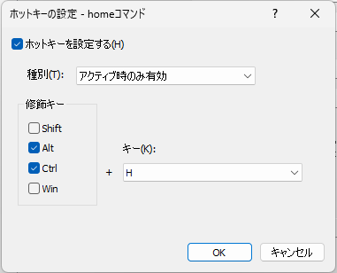
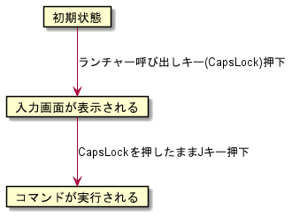

キー割り当て
コマンドに対するキー割り当てを行うための画面。
割り当てたキーを押すとコマンドを実行することができる。

ホットキーを設定する
コマンドに対してキー割り当てを行う場合はチェックする種別
以下の3つのいずれかを選択する。
アクティブ時のみ有効orアクティブ時のみ有効(SandS)or常駐時いつでも有効種別の説明はホットキーの種別についてを参照
修飾キー修飾キーを選択するためのもの。
例:
Ctrlのみチェックし、キーとしてAを選択した場合 → Ctrl+A種別として
アクティブ時のみ有効(SandS)を選択した場合は以下の5つのいずれかを選択することができる。
SpaceCapsLock変換無変換かな
キー修飾キーと組み合わせる文字を選択する
ホットキーの種別
ホットキーの種別として以下の3つを選択できる
アクティブ時のみ有効アクティブ時のみ有効(SandS)常駐時いつでも有効
アクティブ時のみ有効とアクティブ時のみ有効(SandS)は入力画面が表示されているときだけ機能する。 一方、常駐時いつでも有効は入力画面が表示されていないときでも機能する。アクティブ時のみ有効(SandS)のSandSは「Space and Shift」の略で、単体でキーを押したときは文字キー(→Space)として機能し、
他のキーと同時押ししたときは修飾キー(→Shift)として機能する、という概念のことランチャー呼び出しキーの修飾キーと
SandSの修飾キーを同じキーとして設定することにより、スムーズにコマンドを呼び出すことができる例:
ランチャー呼び出しのホットキーをCapsLockにして、コマンドのホットキーをCapsLock+Jに設定していたとすると、以下のような動きになる

つまり、他アプリとのキー割り当ての干渉をあまり気にすることなく、グローバルホットキー的な機能が実現できる
ホットキー種別の比較
それぞれ実現している仕組みが異なる。
常駐時いつでも有効はシステムのホットキーに登録するため、登録したキーを使って、いつでも呼び出せる一方で、ほかのアプリ内においてそのキーを使うことができなくなる
種別 |
メリット |
デメリット |
|---|---|---|
|
他アプリに干渉しない |
まずアクティブにする(入力画面を表示する)必要がある |
|
SandSの修飾キーをランチャー呼び出しキーの修飾キーと合わせることにより、スムーズな運指が実現できる |
まずアクティブにする(入力画面を表示する)必要がある |
|
いつでも呼び出せる |
登録したキーを他アプリで使えなくなってしまう |